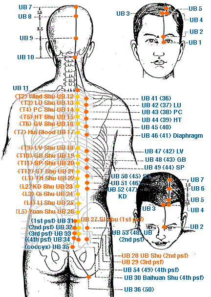

|
Meridian Point : UB-1
Location: In a depression, .1 cun above the inner canthus of the eye.
English Name: Bright Eyes
Pinyin Name: Jing Ming
Actions & Effect:
Main point for all eye disorders especially from wind (internal or external), excess, a/or heat.
Eye pain, strain, redness, swelling, itching, twitching, blurry vision, etc.
Myopia, color blindness, night blindness.
Glaucoma, optic nerve atrophy, cataracts.
Disease
Blurred vision, dizziness, nearsightness, night blindness, color blindness
Meridian Point : UB-2
Location: On the medial end of the eyebrow, directly above the inner canthus of the eye (on the supraorbital notch).
English Name: Bamboo Gathering
Pinyin Name: Zan Zhu
Actions & Effect:
Local point for sinus congestion a/or headache.
Red, itchy, watery eyes - allergies.
Use in facial massage for headaches with GB 20, ST 8, LI 4, and UB 60.
Glaucoma, night blindness, blurry and/or weak vision.
Generally, needle towards UB 1 for eye disease or Yuyao for supraorbital pain.
Disease
Facial distortion, blurred vision, redness, swelling and pain of the eye, twitching of eyelids, prolapse of eyelids, headache
Meridian Point : UB-3
Location: .5 cun inside the anterior hairline, directly above UB 2, between GV 24 and UB 4.
English Name: Eyebrow Ascension
Pinyin Name: Mei Chong
Actions & Effect:
Local point for headaches, nasal obstruction.
Epilepsy, agitation of the heart (possibly resulting in mania or excessive giddiness).
Disease
Headache, vertigo, nasal congestion
Meridian Point : UB-4
Location: 1.5 cun lateral to GV 24, or .5 cun inside the AHL at the junction of the medial 1/3 and lateral 2/3's distance between GV 24 & ST 8.
English Name: Deviating Turn
Pinyin Name: Qu Cha
Actions & Effect:
Local point for headache and/or nasal issues.
Headaches, particularly frontal/sinus, eye pain, vision issues (dimness, blurry).
Nasal polyps, nosebleeds, allergies, rhinitis.
Disease
Headache, nasal congestion, epistaxis, blurring of vision
Meridian Point : UB-5
Location: .5 cun behind UB 4 or 1 cun above the AHL and 1.5 cun lateral to the AML or 1.5 cun lateral to GV 23.
English Name: Fifth Place
Pinyin Name: Wu Chu
Actions & Effect:
Local point for headache and/or eye pain.
Epilepsy, yang ascension issues (manic episodes, dizziness, etc.)
Sinus congestion, stuffy head.
Disease
Headache, dizziness
Meridian Point : UB-6
Location: 1.5 cun posterior to UB 5 or 2.5 cun above AHL and 1.5 cun lateral to the AML.
English Name: Light Guard
Pinyin Name: Cheng Guang
Actions & Effect:
Local Point.
Disease
Blurring of vision, dizziness
Meridian Point : UB-7
Location: 1.5 cun posterior to UB 6 or 4 cun above the AHL and 1.5 cun lateral to the AML.
English Name: Celestial Connection
Pinyin Name: Tong Tian
Actions & Effect:
Local Point.
Disease
Nasal congestion, nasal polyps, nasal ulcers, rhinorrhea, epistaxis, headache, dizziness
Meridian Point : UB-8
Location: 1.5 cun posterior to UB 7 or 5.5 cun above the AHL and 1.5 cun lateral to the AML.
English Name: Declining Connection
Pinyin Name: Luo Que
Actions & Effect:
Useful for removing obstructions causing Qi flow issues to the head/brain (heavy head, vertex pain, distention, depression)
Disease
Blurring of vision, tinnitus
Meridian Point : UB-9
Location: 1.3 cun lateral to GV 17 or 2.5 cun above the PHL, 1.3 cun lateral to the PML in depression level with GV 17.
English Name: Jade Pillow
Pinyin Name: Yu Zhen
Actions & Effect:
Local Point.
Tong Ren/Tam Healing System: Used to effect the cerebellum (muscle coordination, equilibrium). Useful for stroke recovery, ALS, MS, Parkinson's, etc.
Disease
Headache and neck pain, blurring of vision, nasal congestion
Meridian Point : UB-10
Location: 1.3 cun lateral to GV 15 in a depression or .5 cun above the PHL and 1.3 cun lateral to the PML on the lateral aspect of the trapezius.
English Name: Celestial Pillar
Pinyin Name: Tian Zhu
Actions & Effect:
Neck issues, stiffness, ROM, occipital headache. For stiffness on one-side of the neck combine with SI 3 on the same side & GB 39 on the opposite side.
Secondary point to release the exterior in wind-cold conditions, primary is GB 20.
Disease
Headache, stiff neck, dizziness, headache, pain in the shoulder and back, depressive psychosis, epilepsy
Meridian Point : UB-11
Location: 1.5 cun lateral to GV 13, level with T1.
English Name: Great Shuttle
Pinyin Name: Da Zhu
Actions & Effect:
Wind disorders.
Hui-meeting point of the bones, useful with any bone or problem such as osteoporosis, arthritis, inflammation, sensation of heat in the bones, etc.
Useful adjunctive point to effect the lungs in cases of infections, colds a/or flus or asthma related conditions.
Sea of Blood Point with ST 37 & ST 39. According to the Ling Shu Treatise on the Seas, "when the Sea of blood is full, the patient has the sensation that his body is bigger than it is. One feels uneasy, and does not know the disease; when the Sea of blood is insufficient, one often feels the body is small, one feels uneasy and does not know the disease." May be useful for leukemia, anemia, said to tonify the bone marrow.
Disease
Stiff neck, pain in the shoulder and back, headache, nasal obstruction, sore throat, cough and fever
Meridian Point : UB-12
Location: 1.5 cun lateral to GV line, level with T2.
English Name: Wind Gate
Pinyin Name: Feng Men
Actions & Effect:
Main point to expel wind from the Wei Qi level of the body, useful for early stages of wind-cold conditions.
Apply moxa here and on ST 36 to strengthen the Wei Qi.
Disease
Common cold, cough, fever, headache, neck stiffness, pain in the chest and back
Meridian Point : UB-13
Location: 1.5 cun lateral to GV 12, level with T3.
English Name: Lung Shu
Pinyin Name: Fei Shu
Actions & Effect:
Main point for all Lung problems: cough, asthma, bronchitis, sore throat, nasal congestion, shortness of breath, weakness of the voice, etc.
Useful for skin disorders, itching, acne, hives, etc.
Lung related emotional imbalances such as grief and sadness.
Disease
Fever, cough, hemoptysis, night sweating, nasal congestion
Meridian Point : UB-14
Location: 1.5 cun lateral to the GV line, level with T4.
English Name: Jue Yin Shu (Pericardium Shu)
Pinyin Name: Jue Yin Shu
Actions & Effect:
For all heart conditions: palpitations, anxiety, stress, etc. Combine with PC 6 to open the chest.
As the "Jueyin Shu" you may also treat LV related conditions such as stagnation of LV Qi.
Disease
Angina pectoris, palpitation, vomiting, cough, chest congestion
Meridian Point : UB-15
Location: 1.5 cun lateral to GV 11, level with T5.
English Name: Heart Shu
Pinyin Name: Xin Shu
Actions & Effect:
Main point for all heart, blood and circulatory related issues of an excess or deficient nature.
Main point for all heart related emotional issues: palpitations, anxiety, stress, poor memory. Useful with PC 6, HT 7, CV 14 a/or UB 14.
Main point for insomnia.
Night sweats in Heart Qi a/or Yin deficiency.
Disease
Angina pectoris, palpitation, chest congestion, shortness of breath, insomnia, cough and night sweating
Meridian Point : UB-16
Location: 1.5 cun lateral to GV 10, level with T6.
English Name: Governing Shu
Pinyin Name: Du Shu
Actions & Effect:
Hot a/or toxic skin conditions (esp. on the back): acne, boils, etc.
Disease
Angina pectoris, chest congestion, gastric pain, abdominal pain, cough, asthma
Meridian Point : UB-17
Location: 1.5 cun lateral to GV 9, level with T7.
English Name: Diaphragm Shu
Pinyin Name: Ge Shu
Actions & Effect:
Hui-meeting Point of the Blood, useful for all Blood related conditions. Classically combined with UB 19 to create the "Four Flowers" which is used to nourish the Blood, although in clinical practice UB 18 & UB 19 may used equally as often.
For menstrual problems, from deficiency (scanty, light periods, amenorrhea) or stasis (dark clots, dysmenorrhea).
Important point for red, itchy skin disorders, from heat in the Blood: eczema, carbuncles.
As the "Diaphgram shu" it is useful for problems with diaphragmatic breathing or shortness of breath and other diaphragm related conditions such as belching or hiatal hernia.
Disease
Vomiting, Acute epigastric pain, hiccup, dysphagia, blood in the stools, cough, asthma
Meridian Point : UB-18
Location: 1.5 cun lateral to GV 8, level with T9.
English Name: Liver Shu
Pinyin Name: Gan Shu
Actions & Effect:
Main point for all Liver related conditions: hepatitis, jaundice, cirrhosis, Blood stagnation, Qi stagnation, etc.
Main point for eye problems, pain, itching, dryness, redness, blurred vision, visual dizziness, twitching.
Main point for LV related emotional issues such as anger, depression, irritability, frustration, stress a/or PMS.
Useful for hypochondriac a/or subcostal pain/distention.
Disease
Jaundice, dizziness, eye diseases, vomiting, back pain, epilepsy
Meridian Point : UB-19
Location: 1.5 cun lateral to GV 7, level with T10
English Name: Gallbladder Shu
Pinyin Name: Dan Shu
Actions & Effect:
Shao Yang level diseases, alternating fever and chills.
Main point for damp heat in the Liver and Gall Bladder: hepatitis, cholecystitis, jaundice, vomiting, flank pain and distension, bitter taste in the mouth. Often combined with the LV Shu (UB 18).
UB 17 & UB 19 are classcially known as the "Four Flowers," useful for tonifying the Blood.
Pain along the GB meridian (sides of the body) from any etiology, intercostal neuralgia, rib pain, trauma, herpes zoster.
Gall Bladder related emotional issues: indecision, timidity.
Disease
Jaundice, bitter taste in mouth, fever
Meridian Point : UB-20
Location: 1.5 cun lateral to GV 6, level with T11.
English Name: Spleen Shu
Pinyin Name: Pi Shu
Actions & Effect:
Main point for all Spleen problems: low energy, fatigue, prolapses, damp related conditions a/or bleeding disorders.
Commonly used for SP Qi Deficiency: fatigue, lack of appetite, abdominal bloating a/or distention, undigested food in the stools, chronic diarrhea a/or belching.
Disease
Abdominal distention, jaundice, vomiting, diarrhea, dysentery, blood in the stools
Meridian Point : UB-21
Location: 1.5 cun lateral to GV line, level with T12
English Name: Stomach Shu
Pinyin Name: Wei Shu
Actions & Effect & Functions:
Main point for all Stomach related issues: food stagnation, abdominal distention, borborygmus, mouth ulcers, vomiting, belching, nausea, etc.
Dissolve accumulations/lumps in the abdomen, combine with Pigen (point for lumps, tumors), 3.5 cun lateral to the lower border of L1.
Harmonizes the Stomach and strengthens the Spleen
Disease
Vomiting, abdominal distention, pain in the chest and back
Meridian Point : UB-22
Location: 1.5 cun lateral to GV 5, level with L1.
English Name: Triple Burner Shu
Pinyin Name: San Jiao Shu
Actions & Effect:
As Triple Heater Shu this point effects conditions related to imbalances between the upper and lower parts of the body especially those related to water: edema, bloating, ascites, borborygmus, difficult or painful urination, urinary retention.
Disease
Abdominal distention, vomiting, diarrhea, dysentery, stiffness and pain in the loins and back
Meridian Point : UB-23
Location: 1.5 cun lateral to GV 4, level with L2.
English Name: Kidney Shu
Pinyin Name: Shen Shu
Actions & Effect:
For all Kidney related issues which effect the brain, bone, hair, teeth a/or hearing.
Male deficiency related sexual problems: impotence, premature ejaculation, spermatorrhea, sterility, exhaustion following ejaculation.
Female sexual and reproductive disorders: dysmenorrhea, amenorrhea, cold uterus, frigidity, infertility, leukorrhea.
Tonification point in deficiency conditions: exhaustion, weakness, chronic fatique, good point for the elderly as Kidney Jing is naturally depleted.
Main point for acute or chronic low back pain, sprains a/or strains.
Useful for KD related ear issues: tinnitus, deafness, chronic ear infections.
Disease
Lower back pain, deafness, tinnitus, cough, asthma
Meridian Point : UB-24
Location: 1.5 cun lateral to GV line, level with L3.
English Name: Sea of Qi Shu
Pinyin Name: Qi Hai Shu
Actions & Effect:
Back pain.
Disease
Abdominal distention, hemorrhoids
Meridian Point : UB-25
Location: 1.5 cun lateral to GV 3, level with L4.
English Name: Large Intestine Shu
Pinyin Name: Da Chang Shu
Actions & Effect:
Main point for low back pain especially when related to constipation a/or menstruation. Combine with local points such as GV 3, UB 26, Shiqizhui (between L5 and S1), UB 31, UB 32, GB 30 & distal points such as GB 34, GB 39, GB 41, UB 40, UB 57, UB 58, UB 60 & UB 62.
Main point for all intestine related issues: constipation, diarrhea, dysentery, colitis, IBS, et.
Disease
Abdominal distention, diarrhea, constipation, bleeding hemorrhoids, lumbar pain
Meridian Point : UB-26
Location: 1.5 cun lateral to GV line, level with L5.
English Name: Origin Pass Shu
Pinyin Name: Guan Yuan Shu
Actions & Effect:
Low back pain.
Disease
Pain in the lumbosacral region, abdominal distention, diarrhea, frequent urination
Meridian Point : UB-27
Location: 1.5 cun lateral to GV line, level with 1st PSF.
English Name: Small Intestine Shu
Pinyin Name: Xiao Chang Shu
Actions & Effect:
Main point for all Small Intestine related issues: damp heat effecting the bladder (difficult or painful urination, hematuria, dark urine), damp heat effecting the intestines (diarrhea, dysentary).
Disease
Diarrhea, urinary problems, lower abdominal distention and pain
Meridian Point : UB-28
Location: 1.5 cun lateral to GV line, level with 2nd PSF.
English Name: Bladder Shu
Pinyin Name: Pang Guang Shu
Actions & Effect:
Main point for all Bladder issues: from damp heat (painful a/or dark urination), from cold (frequent urination, incontinence).
For dampness anywhere in the body, combine with SP 9 to expel dampness through urinatio.
Disease
Dysuria, retention of urine, stiffness and pain in loins and spine, leg pain, diarrhea, constipation
Meridian Point : UB-29
Location: 1.5 cun lateral to the GV line, level with the 3rd PSF.
English Name: Central Backbone Shu
Pinyin Name: Zhong Lu Shu
Actions & Effect:
Local Point.
Disease
Diarrhea, hernia, lower back pain and stiffness
Meridian Point : UB-30
Location: 1.5 cun lateral to the GV line, level with the 4th PSF.
English Name: White Ring Shu
Pinyin Name: Bai Huan Shu
Actions & Effect:
Secondary point for KD related gynecological disorders: menstrual problems, leukorrhea, pelvic inflammatory disease, enometriosi.
Disease
Irregular menstruation, hernia
Meridian Point : UB-31
Location: On the sacrum at the midpoint of the PSIS and the PML, level with the 1st PSF.
English Name: Upper Bone Hole
Pinyin Name: Shang Liao
Actions & Effect:
UB 31, UB 32, UB 33 & UB 34 together form the "Eight Liao" points and are all useful for local low back a/or sacrum problems and most genital and urinary related disorders. Of these UB 32 is most often used clinically.
Disease
Dysuria, impotence, irregular menstruation, prolapse of uterus
Meridian Point : UB-32
Location: On the sacrum medial and inferior to the PSIS, level with the 2nd PSF.
English Name: Second Bone Hole
Pinyin Name: Ci Liao
Actions & Effect:
UB 31, UB 32, UB 33 & UB 34 together form the "Eight Liao" points and are all useful for local low back a/or sacrum problems and most genital and urinary related disorders. Of these UB 32 is most often used clinically.
OB/GYN issues: leukorrhea, painful menstruation, blood stagnation.
Important point for easing labor pain a/or inducing labo.
Disease
Irregular menstruation, pain, weakness, and numbness of the lower extremities, hernia, dysuria, impotence
Meridian Point : UB-33
Location: On the sacrum medial and inferior to UB 32, level with the 3rd PSF.
English Name: Central Bone Hole
Pinyin Name: Zhong Liao
Actions & Effect:
UB 31, UB 32, UB 33 & UB 34 together form the "Eight Liao" points and are all useful for local low back a/or sacrum problems and most genital and urinary related disorders. Of these UB 32 is most often used clinicall.
Disease
Irregular menstruation, constipation, diarrhea, unsmooth urination
Meridian Point : UB-34
Location: On the sarcum lateral to GV 2, level with the 4th PSF.
English Name: Lower Bone Hole
Pinyin Name: Xia Liao
Actions & Effect:
UB 31, UB 32, UB 33 & UB 34 together form the "Eight Liao" points and are all useful for local low back a/or sacrum problems and most genital and urinary related disorders. Of these UB 32 is most often used clinicall.
Disease
Lower abdominal pain, constipation, unsmooth urination, irregular menstruation
Meridian Point : UB-35
Location: .5 cun lateral to the GV line on either side of the tip of the coccyx bone.
English Name: Meeting of Yang
Pinyin Name: Hui Yang
Actions & Effect:
Main point for hemorrhoids.
Trauma a/or pain of the coccyx, deviation.
Disease
Diarrhea, blood in the stools, hemorrhoids, impotence
Meridian Point : UB-36
Location: On posterior side of the thigh at the midpoint of the inferior gluteal crease (locate in prone position).
English Name: Support
Pinyin Name: Cheng Fu
Actions & Effect:
Low back pain/sciatica where pain runs down the posterior aspect of the leg.
Weakness of the lower limb.
Disease
Pain in the waist, hemorrhoids
Meridian Point : UB-37
Location: 6 cun below UB 36 on a line joining UB 36 and UB 40.
English Name: Gate of Abundance
Pinyin Name: Yin Men
Actions & Effect:
Local Point.
Disease
Lumbar pain, pain, numbness and weakness of the lower extremities
Meridian Point : UB-38
Location: 1 cun above UB 39 on the medial side of the tendon of biceps femoris (found with knee slightly bent).
English Name: Superficial Cleft
Pinyin Name: Fu Xi
Actions & Effect:
Local Point.
Disease
Stiffness and pain of waist and spine, lower abdominal distention, spasmodic pain in foot and legs
Meridian Point : UB-39
Location: Lateral to UB 40 on the medial border of the tendon of biceps femoris.
English Name: Bend Yang
Pinyin Name: Wei Yang
Actions & Effect:
Damp heat conditions effecting the lower warmer: disperse for difficult urination.
Tonify for urinary incontinence.
Disease
Lumbar pain, spasm and weakness of the lower extremities, abdominal pain, vomiting, diarrhea
Meridian Point : UB-40
Location: Midpoint of the transverse crease of the popliteal fossa, between the tendons of biceps femoris and semitendinosis.
English Name: Bend Middle
Pinyin Name: Wei Zhong
Actions & Effect:
As the Lumbar Command Point, useful for all lumbar related issues: acute low back pain, sprain, muscle spasms, etc.
Main point for heat conditions such as summer heat, heatstroke and heat exhaustion.
Main point for all skin related issues: itching, oozing, inflammation, etc.
Good local point for leg a/or knee pai.
Disease
Lumbar pain, spasm and weakness of the lower extremities, abdominal pain, vomiting, diarrhea
Meridian Point : UB-41
Location: 3 cun lateral to the GV line, level with T2, on the spinal border of the scapula.
English Name: Attached Branch
Pinyin Name: Fu Fen
Actions & Effect:
Local Point.
Disease
Rigidity and pain of the neck, spasm of the shoulder and back, numbness of the elbow and arm
Meridian Point : UB-42
Location: 3 cun lateral to GV 12, level with T3, on the spinal border of the scapula.
English Name: Po Door
Pinyin Name: Po Hu
Actions & Effect:
Reinforce the Lung Shu (UB 13) for Lung related disorders: cough, asthma, etc.
Effect the psycho-emotional aspects of the Lung meridian.
Drain heat from the Lun.
Disease
Cough, asthma, pulmonary tuberculosis, neck stiffness, pain in the shoulder and back
Meridian Point : UB-43
Location: 3 cun lateral to the GV line, level with T4.
English Name: Gao Huang Shu
Pinyin Name: Gao Huang Shu
Actions & Effect:
Main point for all disorders of the Lung and Upper Warmer: asthma, dyspnea, cough, tuberculosis, etc.
Tonification point for cases of weakness and deficiency especially from chronic illness.
Disease
Pulmonary tuberculosis, cough, asthma, poor appetite, loose stools, emaciation and weakness, aching pain in the shoulder and back
Meridian Point : UB-44
Location: 3 cun lateral to GV 11, level with T5.
English Name: Spirit Hall
Pinyin Name: Shen Tang
Actions & Effect:
Reinforce the HT Shu (UB 15) and treat Heart related psycho-emotional issues: anxiety, insomnia, etc.
Disease
Cardiac pain, palpitations, insomnia, chest congestion, cough, asthma
Meridian Point : UB-45
Location: 3 cun lateral to GV 10, level with T6.
English Name: Yi Xi
Pinyin Name: Yi Xi
Actions & Effect:
Local Point.
Disease
Cough, asthma, pain of the shoulder and back
Meridian Point : UB-46
Location: 3 cun lateral to GV 9, level with T7.
English Name: Diaphragm Pass
Pinyin Name: Ge Guan
Actions & Effect:
Local Point.
Disease
Vomiting, belching, hiccup, stiffness and pain of the back and spine
Meridian Point : UB-47
Location: 3 cun lateral to GV 8, level with T9.
English Name: Hun Gate
Pinyin Name: Hun Men
Actions & Effect:
Reinforce the LV Back Shu (UB 18) and help treat the psycho-emotional aspects of the LV: depression, frustration, etc.
Disease
Chest congestion and hypochondrium, vomiting, diarrhea, back pain
Meridian Point : UB-48
Location: 3 cun lateral to GV 7, level with T10.
English Name: Yang Headrope
Pinyin Name: Yang Gang
Actions & Effect:
Local Point.
Disease
Jaundice, abdominal pain, borborygmus, diarrhea, diabetes
Meridian Point : UB-49
Location: 3 cun lateral to GV 6, level with T11.
English Name: Reflection Abode
Pinyin Name: Yi She
Actions & Effect:
Reinforce the SP Shu (UB 20) especially with damp heat conditions: hepatitis, cholecystitis, wasting and thirsting (diabetes), etc.
Disease
Abdominal distention, borborygmus, vomiting, diarrhea
Meridian Point : UB-50
Location: 3 cun lateral to the GV line, level with T12.
English Name: Stomach Granary
Pinyin Name: Wei Cang
Actions & Effect:
Local Point.
Disease
Abdominal distention, infantile dyspepsia, edema
Meridian Point : UB-51
Location: 3 cun lateral to GV 5, level with L1.
English Name: Huang Gate
Pinyin Name: Huang Men
Actions & Effect:
Local Point.
Disease
Abdominal pain, constipation, abdominal mass, breast disease
Meridian Point : UB-52
Location: 3 cun lateral to GV 4, level with L2.
English Name: Will Chamber
Pinyin Name: Zhi Shi
Actions & Effect:
Reinforce the KD Back Shu (UB 23) for fertility issues (impotence, infertility) a/or urinary issues especially from damp heat or KD Qi or Yang deficiency (incontinence, dribbling urine).
Disease
Impotence, lumbar stiffness and pain
Meridian Point : UB-53
Location: 3 cun lateral to the medial sacral crest, level with the 2nd PSF.
English Name: Bladder Huang
Pinyin Name: Bao Huang
Actions & Effect:
Local Point.
Disease
Lumbar pain, abdominal distention
Meridian Point : UB-54
Location: 3 cun lateral to the GV line, level with the 4th PSF.
English Name: Sequential Limit
Pinyin Name: Zhi Bian
Actions & Effect:
Sciatica especially if pain radiates along the posterior aspect of the leg.
Five Lin (Painful Urination) disorder.
Disease
Dysuria, constipation, muscular atrophy, pain, numbness and motor impairment of the lower extremities, hemorrhoids
Meridian Point : UB-55
Location: 2 cun directly below UB 40 between the medial and lateral heads of the gastrocnemius, on a line joining UB 40 - UB 57.
English Name: Yang Union
Pinyin Name: He Yang
Actions & Effect:
Local Point.
Disease
Lumbar stiffness and pain, pain, numbness and weakness of the lower extremities, hernia
Meridian Point : UB-56
Location: 5 cun below UB 40 on the line connecting UB 40 - UB 57, midway between UB 55 and UB 57 in the center of the belly of the gastrocnemius.
English Name: Sinew Support
Pinyin Name: Cheng Jin
Actions & Effect:
Local Point.
Disease
Hemorrhoids
Meridian Point : UB-57
Location: 8 cun below UB 40 in a pointed depression below the gastrocnemius when leg is stretched or heel is lifted.
English Name: Mountain Support
Pinyin Name: Cheng Shan
Actions & Effect:
Main point for pain, swelling a/or cramping of the calf.
Heel a/or foot pain from trauma but also from paralysis a/or neurological disorder.
Main point for hemorrhoids from any etiology.
Disease
Hemorrhoids
Meridian Point : UB-58
Location: 7 cun directly above UB 60 on the posterior border of the fibula about 1 cun lateral and inferior to UB 57.
English Name: Taking Flight
Pinyin Name: Fei Yang
Actions & Effect:
Releases the exterior for wind/wind-cold conditions, especially useful when accompanied with neck stiffness a/or occipital headache.
As Luo Connecting Point, which connects to the KD, useful for chronic low back pain, especially with weak lower limbs and KD deficiency.
"Excess above with deficiency below," weak low back w/tight stiff neck a/or low back pain with weak lower limb.
Disease
Headache, dizziness, pain and weakness of the lumbar and leg, hemorrhoids
Meridian Point : UB-59
Location: 3 cun directly above UB 60.
English Name: Instep Yang
Pinyin Name: Fu Yang
Actions & Effect:
Acute pain a/or spasm of the Bladder a/or Yang Qiao meridians.
Lateral ankle sprai.
Disease
Headache, heavy sensation of the head, pain, numbness and weakness of the lower extremities
Meridian Point : UB-60
Location: In a depression between the tip of the external malleolus and the achilles tendon.
English Name: Kunlun Mountains
Pinyin Name: Kun Lun
Actions & Effect:
Main point for pain anywhere along the spine (UB 40 may be used more for pain in the middle of the spine).
Main point for chronic low back pain a/or problems of pain a/or numbness in the lower limbs.
Main point for headache and other excesses effecting the head.
Induce labor or promote discharge of a retained placent.
Disease
Acute lumbar pain, swelling and pain of the heel, difficult labor, headache, neck stiffness, dizziness
Meridian Point : UB-61
Location: Posterior and Inferior to the external malleolus, directly below UB 60, lateral to the calcaneum at the junction of the red and white skin.
English Name: Subservient Visitor
Pinyin Name: Pu Can
Actions & Effect:
Local Point.
Disease
Pain, numbness and weakness of the lower extremities
Meridian Point : UB-62
Location: In a depression directly below the external malleolus.
English Name: Extending Vessel
Pinyin Name: Shen Mai
Actions & Effect:
With SI 3 for low back pain, difficulty walking, spinal problems as well as wind-cold effecting the taiyang channels: stiff neck a/or shoulders, occipital headache, etc.
Insomnia, nervousness (especially late at night), combine with KD 6.
Disease
Epilepsy, manic psychosis, insomnia, headache, neck rigidity, pain of the lumbar and leg
Meridian Point : UB-63
Location: On the lateral side of the foot, directly below the anterior border of the external malleolus, on the lower border of the cuboid bone.
English Name: Metal Gate
Pinyin Name: Metal Gate
Actions & Effect:
Local Point.
Disease
Headache, manic psychosis, epilepsy, infantile convulsion, lumbar pain, pain, numbness and weakness of the lower extremities, pain in the external malleolus
Meridian Point : UB-64
Location: Below the tuberosity of the 5th metatarsal bone at the junction of the red and white skin.
English Name: Capital Bone
Pinyin Name: Jing Gu
Actions & Effect:
Has a relationship to the Heart and Spirit, good distal point for palpitations, chest pain, irritability, mental confusion.
Local Point.
Disease
Headache, neck rigidity, cataract
Meridian Point : UB-65
Location: Posterior to the 5th metatarsophalangeal joint at the junction of the red and white skin.
English Name: Bundle Bone
Pinyin Name: Shu Gu
Actions & Effect:
Local Point.
Disease
Headache, neck rigidity, pain of the lumbar and the leg, dizziness
Meridian Point : UB-66
Location: Anterior to the 5th metatarsophalangeal joint
English Name: Valley Passage
Pinyin Name: Tong Gu
Actions & Effect:
Local Point.
Disease
Headache, neck rigidity, dizziness, psychosis
Meridian Point : UB-67
Location: .1 cun posterior to the corner of the nail on the lateral side of the little toe.
English Name: Reaching Yin
Pinyin Name: Zhi Yin
Actions & Effect:
Clears pain a/or stagnation from the opposite end of the channel: headache, eye pain, sinus pain, etc.
Use with moxabustion to adjust breech fetal position (generally indirect moxa for 10-20 minutes 1x/day).
Disease
Headache, eye pain, nasal congestion, difficult labor
|